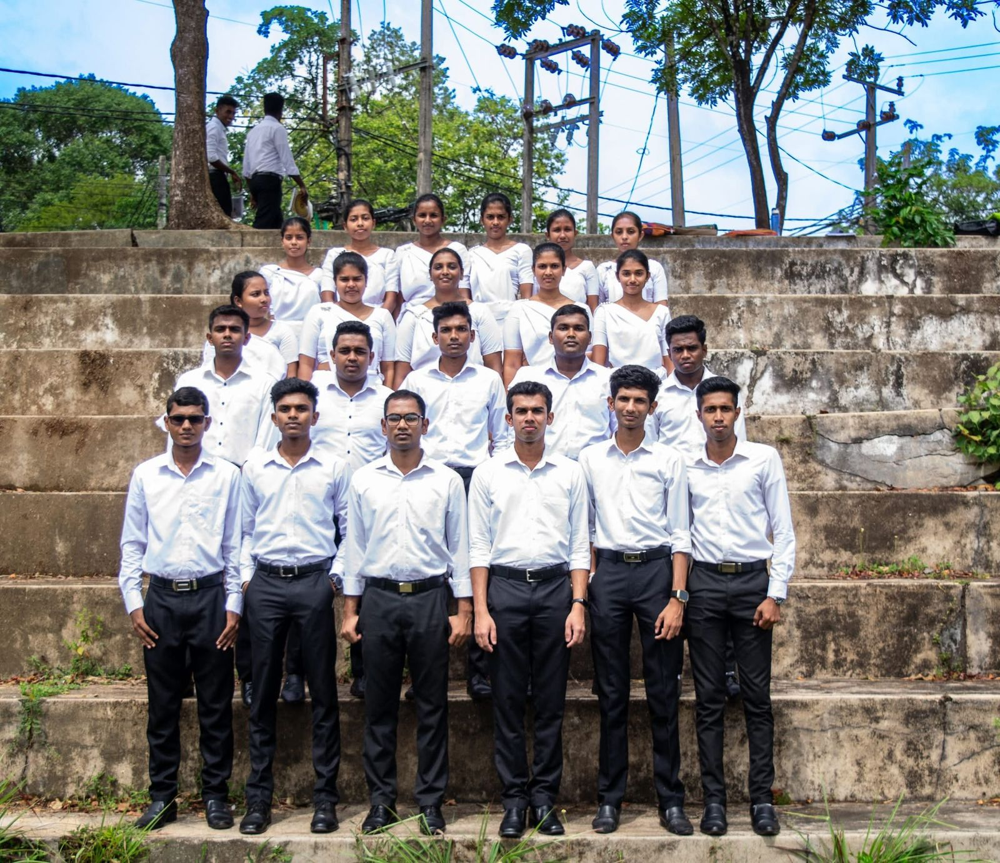
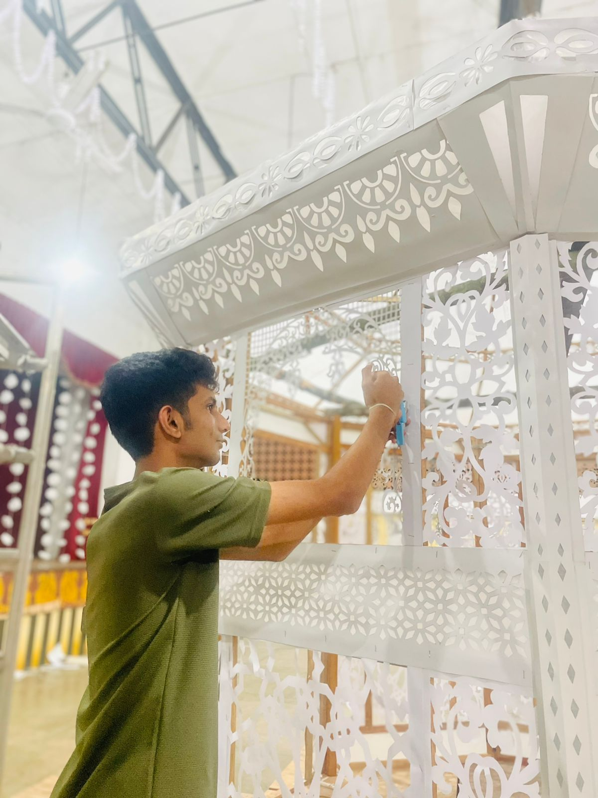

Photo Gallery
මාධ්ය දින උත්සවය සඳහා නිර්මාණ

මාධ්ය දින උත්සවය සඳහා නිර්මාණ
හරිත දින වැඩසටහනේදී

හරිත දින වැඩසටහන සඳහා සහභාගි විය.
විදුලි හා ඉලෙක්ට්රොනික පන්තිය
35 Batch විදුලි හා ඉලෙක්ට්රොනික පන්තිය
ආරාධනා පත්ර නිර්මාණය

ආරාධනා පත්ර සැකසීම
මාධ්ය දින සැරසිලි නිර්මාණය කරමින්

මාධ්ය දින සැරසිලි නිර්මාණය කරමින්
2024 ඉංග්රීසි දින නාට්ය වැඩසටහන

2024 ඔක්තොම්බර් මස 23වන දින ඉංග්රීසි සාහිත්ය සංගමය මගින් පැවැත්වූ නාට්ය සදහා රංගනයෙන් සහ සැරසිලි කටයුතු සඳහා දායක විය.
2024 නත්තල් දින උත්සවයේ ඡායාරූප ශිල්පියෙකු ලෙස

ආගමික සංගමයෙන් පවත්වනු ලැබූ නත්තල් උත්සවය සඳහා 2024.12.05 වන දින ඡායාරූප ශිල්පියෙකු ලෙස
උත්සවයක සැරසිලි

ආගමික සංගමයෙන් පවත්වනු ලැබූ නත්තල් උත්සවය සඳහා 2024.12.05 වන දින සහ සැරසිලි කටයුතු සඳහා සහභාගි විය
සත්සර දැහැන සඳහා චිත්ර

2024.12.12 වන දින සංස්කෘතික සංගමය මඟින් පවත්වනු ලැබූ සත්සර දැහැන සඳහා චිත්ර ඇදීම
පරිසර දිනය සඳහා පත්රිකා නිර්මාණය

2025 06 මස 06 වන දින පරිසර දිනය සඳහා පත්රිකා නිර්මාණය
2025 ක්රීඩා උත්සවයේ සැරසිලි

2025.03.28 වන දින පැවැත්වූ නිවාසාන්තර ක්රීඩා උළෙලේ සැරසිලි කටයුතු සඳහා දායක විය
ක්රීඩා උත්සවය - 2025

2025.03.28 වන දින පැවැත්වූ නිවාසාන්තර ක්රීඩා උළෙල
2025 අලුත් අවුරුදු උත්සව සැරසිලි

2025.04.23 වන දින සංස්කෘතික සංගමය මගින් පැවැත්වූ අවුරුදු උත්සවය සැරසිලි කටයුතු වලට සහභාගි විය
පොසොන් බැති ගී සරණිය - 2025

2025.6.11 වන දින ආගමික සංගමය මඟින් පැවැත්වූ පොසොන් උත්සවය සඳහා පොසොන් බැති ගී වලින්ද දන්සලේ වැඩකටයුතු සඳහාද සහභාගි විය
උත්සවයක න්යාය පත්ර නිර්මාණය

2025.6.25 වන දින හරිත සංගමය මඟින් පැවැත්වූ හරිත නියමුවෝ වැඩසටහන න්යාය පත්ර නිර්මාණය
2026 තෛපොංගල් දින උත්සව සැරසිලි

2026.01.14 වන දින පැවැත්වූ තෛපොංගල් උත්සවය සැරසිලි කිරීම
2026 ඉංග්රීසි දින උත්සව සැරසිලි

2026 ජනවාරි මස 20 වන දින ඉංග්රීසි සාහිත්ය සංගමය මගින් පැවැත්වූ නාට්ය සදහා සැරසිලි සඳහා සහභාගී විය
ඉංග්රීසි දින නාට්ය තරඟය - 2026

2026 ජනවාරි මස 20 වන දින ඉංග්රීසි සාහිත්ය සංගමය මගින් පැවැත්වූ නාට්ය සදහා රංගනයෙන් සහභාගී විය
ඉංග්රීසි දින ගායන තරඟය - 2026

2026 ජනවාරි මස 20 වන දින ඉංග්රීසි සාහිත්ය සංගමය මගින් පැවැත්වූ නාට්ය සදහා ගායනයෙන් සහභාගී විය
කාර්ය භාර ශිෂ්යයෙකු ලෙස

කාර්ය භාර ශිෂ්යයෙකු ලෙස 2025.(01.07)(04.07)(07.20)(10.26) 2026.02.06
2024 ගුරු දින උත්සවයේ සැරසිලි

2024 ගුරු දින උත්සවයේ සැරසිලි කටයුතු සඳහා දායක විය
2024 පිරිත් පින්කමේදී

2024 පිරිත් පින්කම
2025 ගුරු දින උත්සව සැරසිලි

2025 10 මස 06 වන දින ගුරු දින උත්සව සැරසිලි සැරසිලි කටයුතු සඳහා දායක විය
පාසල් පැතිකඩ සඳහා ඉගැන්වීම් ආධාරක

2025.01.25-31 වන දින පාසල් පැතිකඩ සඳහා ඉගැන්වීම් ආධාරක
සාන්ත මරියා විද්යාලයේ පාසල් පැතිකඩ
2025.1.27වන දින සිට සාන්ත මරියා විද්යාලයේ පාසල් පැතිකඩ සඳහා සහභාගි විය
පිරිත් පින්කම් සැරසිලි
2025.2.21 වන දින පැවැත්වූ පිරිත් පින්කම් සැරසිලි
පිරිත් පින්කම

2025.2.21 වන දින පිරිතට සමගාමීව පැවැත්වූ පෙරහැරට සහභාගි විය
ක්ෂේත්ර චාරිකාව - 2025

2025.9.9 වන දින ක්ෂේත්ර චාරිකාව සඳහා සහභාගි විය
පළමු බ්ලොක් ඉගැන්වීම - සංඝබෝධි මධ්ය මහා විද්යාලය

2025.09.22 සිට 2025.10.03 දක්වා පළමු කාණ්ඩ ගුරු පුහුණුව සඳහා සහභාගි විය.
2025 උදෑසන රැස්වීම නිවේදනය කිරීම

2025.10.20 වන දින උදෑසන රැස්වීම නිවේදනය කිරීම
2025 නේවාසිකාගාර දිනය

2025.10.30 වන දින නේවාසිකාගාර දිනය නිමිත්තෙන් වෙළෙඳ කුටියක් පැවැත්වීම
සියනෑ 40වන සංවත්සරය සඳහා චිත්ර
2025.11. 27 වන දින 40 වන සංවත්සරය හේතුවෙන් තීන්ත ආලේප කිරීම
සියනෑ අභිමාන උත්සවය - 2025

සියනෑ අභිමාන උත්සවය සදහා සහභාගී විය- 2025
2025 උත්සවයකදී

2025.11.20 වන දින පිඨාධිපති ප්රීති කරුණාතිලක මැතිණියගේ නික්මයාම උත්සවයේ
2026 ඉංග්රීසි දින නාට්ය තරඟයේ වීඩියෝ ශිල්පියෙකු ලෙස

2026 ජනවාරි මස 20 වන දින ඉංග්රීසි සාහිත්ය සංගමය මගින් පැවැත්වූ නාට්ය තරඟයේ වීඩියෝ ශිල්පියෙකු ලෙස
මහගමසේකර දින වීඩියෝ පට නිර්මාණය - 2026

2026.01.21 වන දින මහගම සේකර දින වීඩියෝ පට නිර්මාණය
2වන ඉගැන්වීම් පුහුණු කණ්ඩායම

2026.01.26 සිට 2026.01.31 දක්වා 2වන කාණ්ඩ ගුරු පුහුණුව සඳහා සහභාගි විය.
ප්රායෝගික දිනය - 2වන ඉගැන්වීම් පුහුණුව

2026.01.28 වන දින ප්රායෝගික දිනය PTS ප්රායෝගික